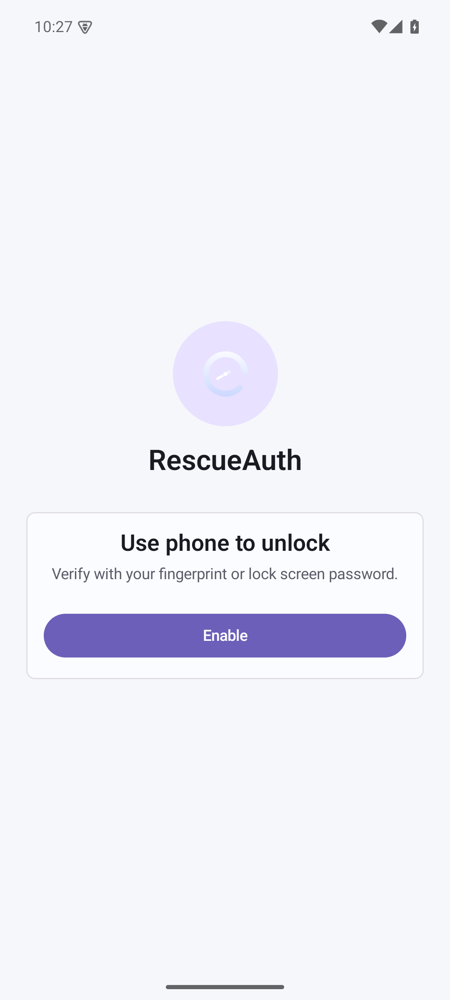
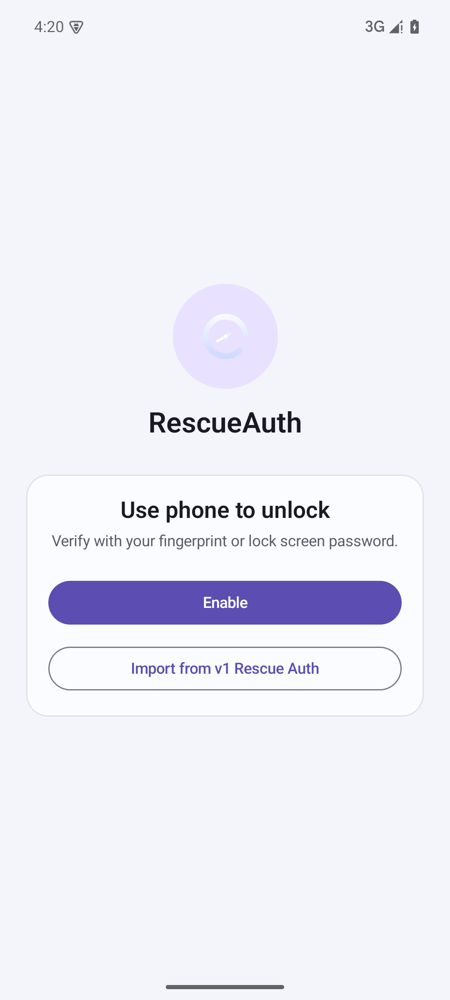
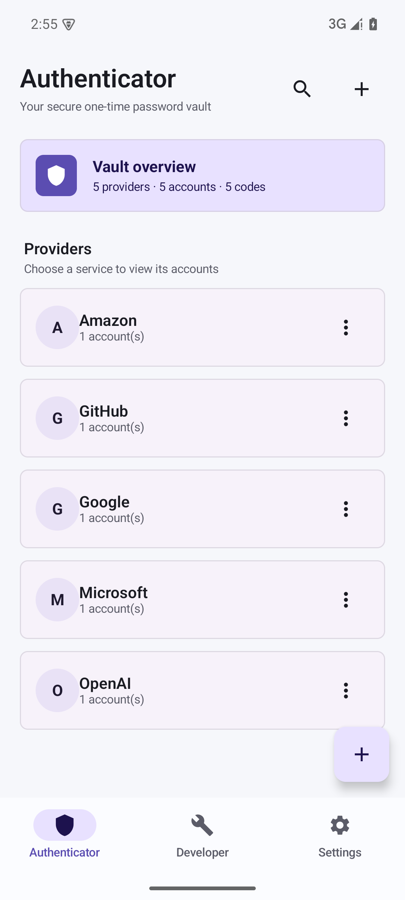
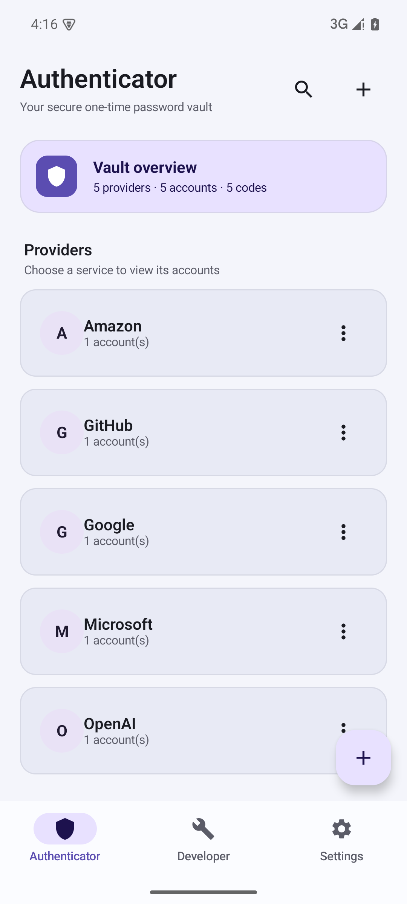
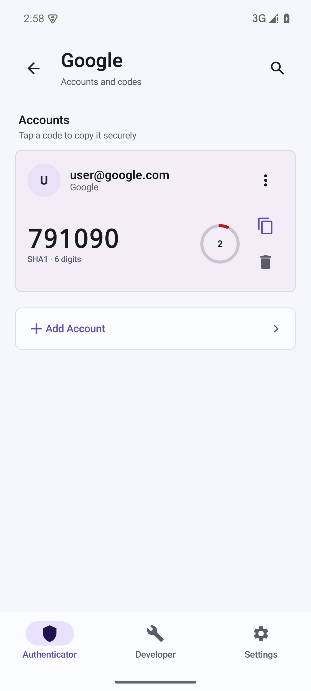
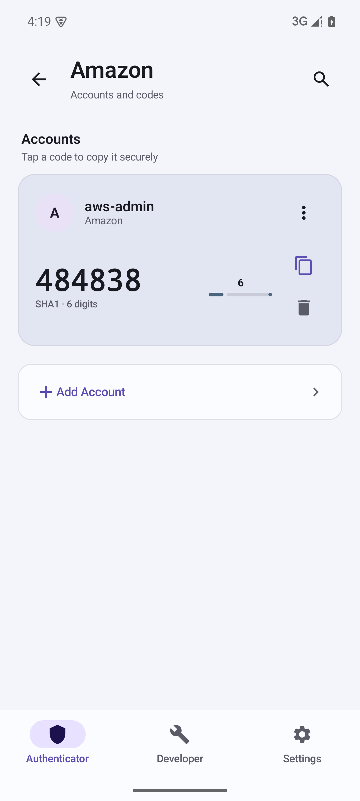
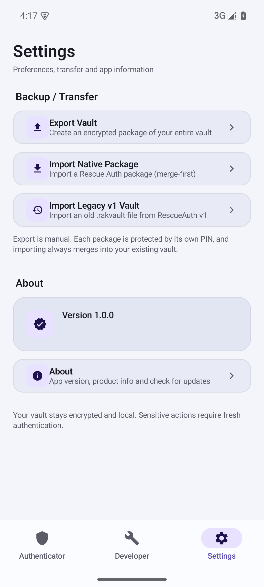

1. First-run Intro
Adaptive intro now re-shows until the Vault is created, and includes the new "Import from v1" secondary action.
Before

Single Enable action, sharper corners.
After

Rounded 20dp card, "Import from v1 Rescue Auth" button added.
2. Provider List
Cooler blue-violet tonal surfaces, rounder 20dp cards, and the top "Vault overview" hero card removed — provider/account/code counts now live in the Providers section subtitle.
Before

Muddier surface colors, flatter card hierarchy, top purple hero/overview card.
After

Clean surfaceContainer layers, 20dp rounded cards. Counts merged into subtitle: "3 providers · 3 accounts · 3 codes".
3. Account Detail
Circular ring countdown replaced with a calmer linear progress bar.
Before

Canvas arc/ring countdown indicator.
After

Linear progress indicator with remaining seconds above.
4. Settings
Theme color preference removed; Backup/Transfer and About remain.
After

No Appearance / Theme section; rounded 20dp row cards.